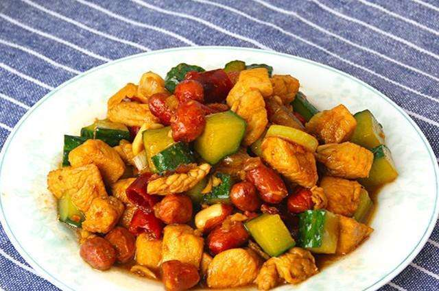
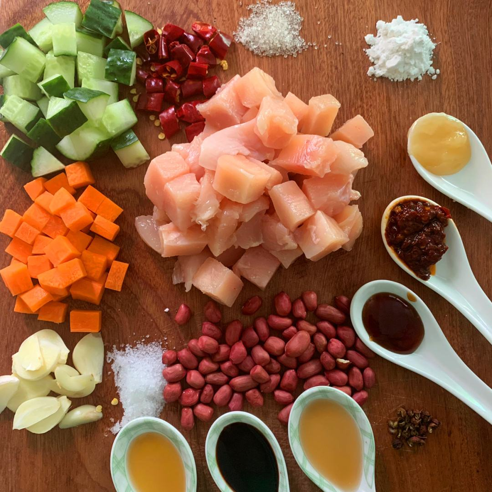

健康美食网首页
早餐食谱
午餐食谱
晚餐食谱
美食推荐
登录 | 注册
美食食谱
健康美食
美食推荐
介绍

宫保鸡丁
是汉族传统经典的名菜，属川菜名菜。宫保鸡丁（Kung Pao Chicken），是一道闻名中外的特色传统名菜，在鲁菜、川菜、贵州菜中都有收录，其原料、做法有差别。该菜式的起源与鲁菜中的酱爆鸡丁、贵州菜中的胡辣子鸡丁有关，后被清朝山东巡抚、四川总督丁宝桢改良发扬，形成了一道新菜式——宫保鸡丁，并流传，此道菜也被归纳为北京宫廷菜，之后宫保鸡丁也流传到国外。宫保鸡丁的特色是辣中有甜，甜中有辣，鸡肉的鲜嫩配合花生的香脆，入口鲜辣酥香，红而不辣、辣而不猛、香辣味浓、肉质滑脆。
配料
鸡肺肉（225克) 干辣椒（8克）
黄瓜切块（100克） 胡萝卜（100克）
花生米（50克） 花椒（1.5克）
大葱（10克） 色拉油（60克）
姜切片（3克） 食盐（2克）
配料若干 水淀粉（22克）
依口味而定 白糖（2克）

做法
1. 鸡胸肉先顺着纹路切条，再切成均匀小丁，加适量料酒和精盐抓拌到粘稠，加半个蛋清继续抓拌，再加入淀粉抓拌给它上浆，最后加少许
食用油拌均防粘。
2. 大葱切小段，胡萝卜切小丁。
3. 姜蒜切末。
4. 锅中加入宽油，油温三成热时下入鸡丁滑散，断生既可捞出。
5. 用剩下的油继续炸花生米
6. 花生米快要炸熟后下胡萝卜闯一下一同捞出。
7. 锅中留底油，下入干辣椒和胡椒粒炸出麻香味，下入葱姜蒜煸炒出香味，再加入少许豆瓣酱炒出红油，顺着锅边烹入陈醋，放入精盐，鸡
精，白糖把料汁翻炒均匀。
8. 加入鸡丁，花生米和胡萝卜丁煸炒均匀，最后出锅前淋入少许红油。
9. 麻辣鲜香的宫保鸡丁就完成了。
10. 看不明白你就生吃吧。